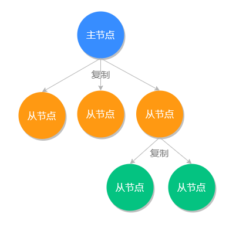

- 01 Redis 是如何执行的.md
- 02 Redis 快速搭建与使用.md
- 03 Redis 持久化——RDB.md
- 04 Redis 持久化——AOF.md
- 05 Redis 持久化——混合持久化.md
- 06 字符串使用与内部实现原理.md
- 07 附录：更多字符串操作命令.md
- 08 字典使用与内部实现原理.md
- 09 附录：更多字典操作命令.md
- 10 列表使用与内部实现原理.md
- 11 附录：更多列表操作命令.md
- 12 集合使用与内部实现原理.md
- 13 附录：更多集合操作命令.md
- 14 有序集合使用与内部实现原理.md
- 15 附录：更多有序集合操作命令.md
- 16 Redis 事务深入解析.md
- 17 Redis 键值过期操作.md
- 18 Redis 过期策略与源码分析.md
- 19 Redis 管道技术——Pipeline.md
- 20 查询附近的人——GEO.md
- 21 游标迭代器（过滤器）——Scan.md
- 22 优秀的基数统计算法——HyperLogLog.md
- 23 内存淘汰机制与算法.md
- 24 消息队列——发布订阅模式.md
- 25 消息队列的其他实现方式.md
- 26 消息队列终极解决方案——Stream（上）.md
- 27 消息队列终极解决方案——Stream（下）.md
- 28 实战：分布式锁详解与代码.md
- 29 实战：布隆过滤器安装与使用及原理分析.md
- 30 完整案例：实现延迟队列的两种方法.md
- 31 实战：定时任务案例.md
- 32 实战：RediSearch 高性能的全文搜索引擎.md
- 33 实战：Redis 性能测试.md
- 34 实战：Redis 慢查询.md
- 35 实战：Redis 性能优化方案.md
- 36 实战：Redis 主从同步.md
- 37 实战：Redis哨兵模式（上）.md
- 38 实战：Redis 哨兵模式（下）.md
- 39 实战：Redis 集群模式（上）.md
- 40 实战：Redis 集群模式（下）.md
- 41 案例：Redis 问题汇总和相关解决方案.md
- 42 技能学习指南.md
- 43 加餐：Redis 的可视化管理工具.md
36 实战：Redis 主从同步
主从同步（主从复制）是 Redis 高可用服务的基石，也是多机运行中最基础的一个。我们把主要存储数据的节点叫做主节点 (master），把其他通过复制主节点数据的副本节点叫做从节点 (slave），如下图所示：

在 Redis 中一个主节点可以拥有多个从节点，一个从节点也可以是其他服务器的主节点，如下图所示：

主从同步的优点
主从同步具有以下三个优点：
- 性能方面：有了主从同步之后，可以把查询任务分配给从服务器，用主服务器来执行写操作，这样极大的提高了程序运行的效率，把所有压力分摊到各个服务器了；
- 高可用：当有了主从同步之后，当主服务器节点宕机之后，可以很迅速的把从节点提升为主节点，为 Redis 服务器的宕机恢复节省了宝贵的时间；
- 防止数据丢失：当主服务器磁盘坏掉之后，其他从服务器还保留着相关的数据，不至于数据全部丢失。
既然主从同步有这么多的优点，那接下来我们来看如何开启和使用主从同步功能。
开启主从同步
运行中设置从服务器
在 Redis 运行过程中，我们可以使用 replicaof host port 命令，把自己设置为目标 IP 的从服务器，执行命令如下：
127.0.0.1:6379> replicaof 127.0.0.1 6380
OK
如果主服务设置了密码，需要在从服务器输入主服务器的密码，使用 config set masterauth 主服务密码 命令的方式，例如：
127.0.0.1:6377> config set masterauth pwd654321
OK
1. 执行流程
在执行完 replicaof 命令之后，从服务器的数据会被清空，主服务会把它的数据副本同步给从服务器。
2. 测试同步功能
主从服务器设置完同步之后，我们来测试一下主从数据同步，首先我们先在主服务器上执行保存数据操作，再去从服务器查询。
主服务器执行命令：
127.0.0.1:6379> set lang redis
OK
从服务执行查询：
127.0.0.1:6379> get lang
"redis"
可以看出数据已经被正常同步过来了。
启动时设置从服务器
我们可以使用命令 redis-server --port 6380 --replicaof 127.0.0.1 6379 将自己设置成目标服务器的从服务器。
数据同步
完整数据同步
当有新的从服务器连接时，为了保障多个数据库的一致性，主服务器会执行一次 bgsave 命令生成一个 RDB 文件，然后再以 Socket 的方式发送给从服务器，从服务器收到 RDB 文件之后再把所有的数据加载到自己的程序中，就完成了一次全量的数据同步。
部分数据同步
在 Redis 2.8 之前每次从服务器离线再重新上线之前，主服务器会进行一次完整的数据同步，然后这种情况如果发生在离线时间比较短的情况下，只有少量的数据不同步却要同步所有的数据是非常笨拙和不划算的，在 Redis 2.8 这个功能得到了优化。
Redis 2.8 的优化方法是当从服务离线之后，主服务器会把离线之后的写入命令，存储在一个特定大小的队列中，队列是可以保证先进先出的执行顺序的，当从服务器重写恢复上线之后，主服务会判断离线这段时间内的命令是否还在队列中，如果在就直接把队列中的数据发送给从服务器，这样就避免了完整同步的资源浪费。
小贴士：存储离线命令的队列大小默认是 1MB，使用者可以自行修改队列大小的配置项 repl-backlog-size。
无盘数据同步
从前面的内容我们可以得知，在第一次主从连接的时候，会先产生一个 RDB 文件，再把 RDB 文件发送给从服务器，如果主服务器是非固态硬盘的时候，系统的 I/O 操作是非常高的，为了缓解这个问题，Redis 2.8.18 新增了无盘复制功能，无盘复制功能不会在本地创建 RDB 文件，而是会派生出一个子进程，然后由子进程通过 Socket 的方式，直接将 RDB 文件写入到从服务器，这样主服务器就可以在不创建RDB文件的情况下，完成与从服务器的数据同步。
要使用无须复制功能，只需把配置项 repl-diskless-sync 的值设置为 yes 即可，它默认配置值为 no。
查询服务器的角色
我们使用 role 命令，来查询当前服务器的主从角色信息。
主服务查看
在主服务器上执行 role 结果如下：
127.0.0.1:6379> role
1) "master"
2) (integer) 546
3) 1) 1) "172.17.0.1"
2) "6379"
3) "546"
master 表示主服务器，底下是从服务器的 IP、端口和连接时间。
从服务器查看
在从服务器执行 role 命令，执行结果如下：
127.0.0.1:6379> role
1) "slave"
2) "192.168.1.71"
3) (integer) 6380
4) "connected"
5) (integer) 14
slave 表示从服务器，底下主服务器的 IP、端口和连接时间。
关闭主从同步
我们可以使用 replicaof no one 命令来停止从服务器的复制，操作命令如下：
127.0.0.1:6379> role #查询当前角色
1) "slave" #从服务器
2) "192.168.1.71"
3) (integer) 6380
4) "connected"
5) (integer) 14
127.0.0.1:6379> replicaof no one #关闭同步
OK
127.0.0.1:6379> role #查询当前角色
1) "master" #主服务器
2) (integer) 1097
3) (empty list or set)
可以看出执行了 replicaof no one 命令之后，自己就从服务器变成主服务器了。
小贴士：服务器类型的转换并不会影响数据，这台服务器的数据将会被保留。
注意事项
主从同步有一些需要注意的点，我们来看一下。
数据一致性问题
当从服务器已经完成和主服务的数据同步之后，再新增的命令会以异步的方式发送至从服务器，在这个过程中主从同步会有短暂的数据不一致，如在这个异步同步发生之前主服务器宕机了，会造成数据不一致。
从服务器只读性
默认在情况下，处于复制模式的主服务器既可以执行写操作也可以执行读操作，而从服务器则只能执行读操作。
可以在从服务器上执行 config set replica-read-only no 命令，使从服务器开启写模式，但需要注意以下几点：
- 在从服务器上写的数据不会同步到主服务器；
- 当键值相同时主服务器上的数据可以覆盖从服务器；
- 在进行完整数据同步时，从服务器数据会被清空。
复制命令的变化
Redis 5.0 之前使用的复制命令是 slaveof，在 Redis 5.0 之后复制命令才被改为 replicaof，在高版本（Redis 5+）中我们应该尽量使用 replicaof，因为 slaveof 命令可能会被随时废弃掉。
小结
本文我们了解了 Redis 多机运行的基础功能主从同步，主从同步可以通过 replicaof host port 命令开启，知道了同步的三种方式：完整数据同步（第一次全量 RDB 同步），部分数据同步（Redis 2.8 对于短时间离线的同步功能优化），无盘同步（非 RDB 生成的方式同步数据），我们也可以使用 replicaof no one 命令来停止从服务器的复制功能。